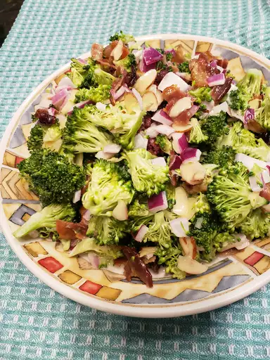

Go Back Home

Description
This homemade broccoli salad uses a tasty combination of fresh broccoli,
cranberries, nuts, and bacon tossed in a rich and creamy dressing.
You might want to double this recipe for a party or potluck — it goes quick!
Ingredients
- ½ pound bacon
- 2 heads fresh broccoli, cut into bite-sized pieces
- 1 small red onion, sliced into bite-sized pieces
- ¾ cup raisins
- ¾ cup sliced almonds
- 1 cup mayonnaise
- ½ cup white sugar
- 2 tablespoons white wine vinegar
Steps
- Gather all ingredients.
:max_bytes(150000):strip_icc():format(webp)/14280-FreshBroccoliSalad-mfs-step1-00933-1aaeee12f8514840a4af516d58adf685.jpg)
- Place bacon in a deep skillet and cook over medium-high heat until evenly brown, 7 to 10 minutes; drain, cool, and crumble.
:max_bytes(150000):strip_icc():format(webp)/14280-FreshBroccoliSalad-mfs-step2-00934-51340a23d5e54582b5f3533fad2c3ed4.jpg)
- Combine bacon, broccoli, onion, raisins, and almonds together in a bowl; mix well.
- To prepare the dressing: Mix mayonnaise, sugar, and vinegar together until smooth.
:max_bytes(150000):strip_icc():format(webp)/14280-FreshBroccoliSalad-mfs-step3-00936-13c936ce21da4a6da95bf8d108c7d754.jpg)
- Stir into the salad.
:max_bytes(150000):strip_icc():format(webp)/14280-FreshBroccoliSalad-mfs-step4-00937-5b2b1f8a03c7491bb10e82b34f958865.jpg)
- Let chill before serving, if desired.
:max_bytes(150000):strip_icc():format(webp)/14280-fresh-broccoli-salad-DDMFS-4x3-e8916dd16ff447d1887ff46eb4fb8e5b.jpg)